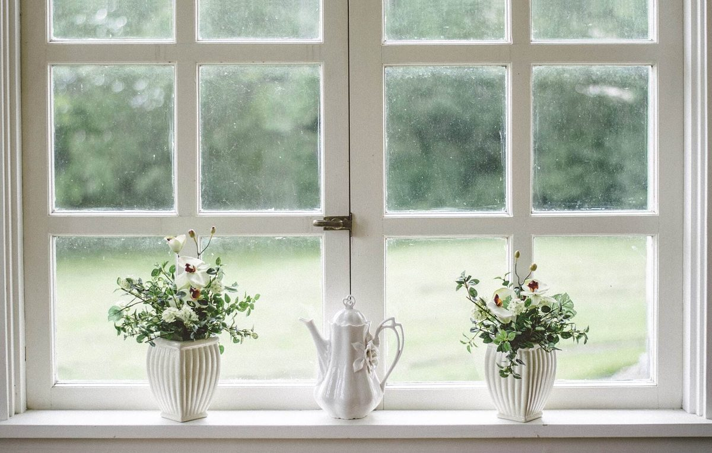
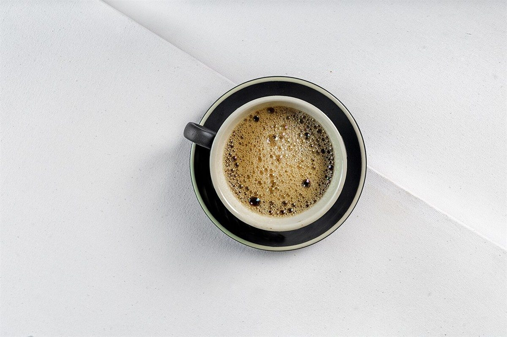

喫茶店
カフェ(喫茶) / 石川県小松市
Sally喫茶店Sally
石川県小松市の「喫茶店Sally」のご案内ページです。営業時間やメニューなど、詳しいことは準備中。まずはInstagramをのぞいてみてください。

制作側の連想
「Sally」から、鐘綱の握りを思い浮かべた
このページの飾りは、制作側が連想したものです。お店の理念や店名の由来とは無関係です。Sallyという響きから、鐘を鳴らす綱についている赤・白・青の縞の毛糸の握り(英語でsallyと呼ぶそうです)を連想し、サイト全体を「縞の握り」に見立てました。左端(スマホでは上端)の縞の帯と、見出しの縞の線がその名残です。
写真(イメージ)
十二の巻き目



